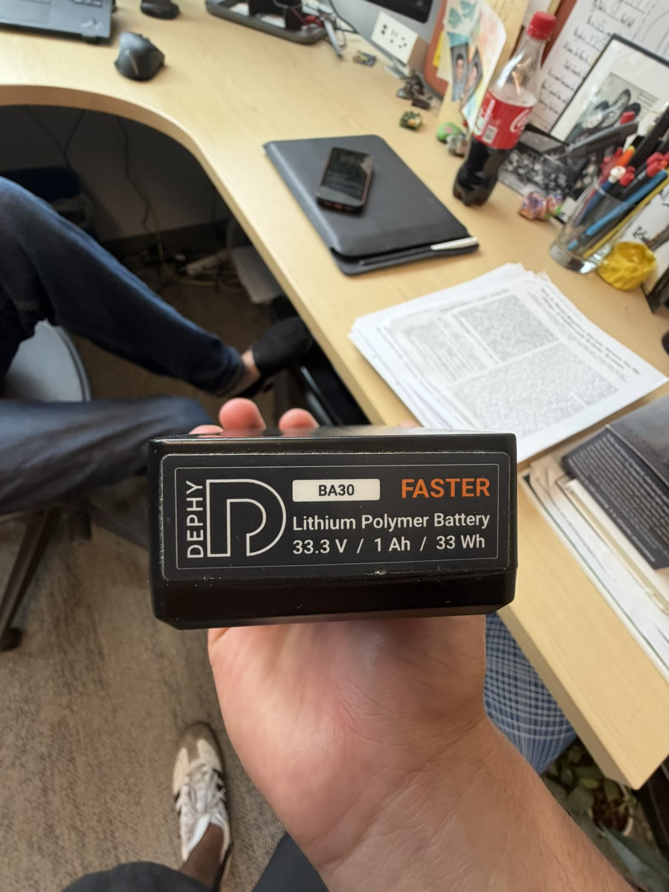
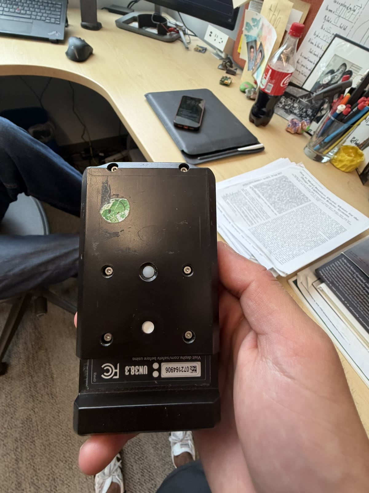

Aug 2026 – present
Neurobionics Lab, University of Michigan Robotics
Assistant Researcher · Open-Source Leg battery pack
The Open-Source Leg is a robotic knee-ankle prosthesis that research labs around the world build and use. I'm designing a custom battery pack and housing to replace the current commercial pack.
- Designed and packaged lithium-ion cell configurations to fit the envelope inside the leg and ankle joint.
- Researched and contacted battery manufacturers, and compiled the design requirements for producing the pack at scale for open-source builders.
- Adjusted the cell design to match each manufacturer's production constraints.
Nominal voltage36 V
Capacity target~1–2 Ah


